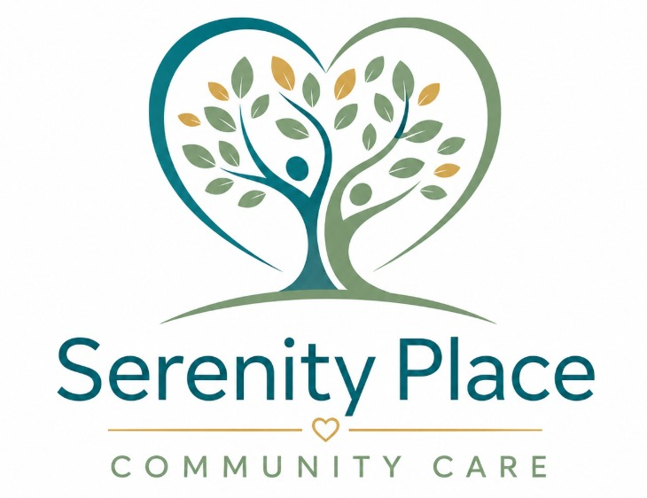

0404 920 503
Tristargroup00@gmail.com
Professional & Trustworthy Care

Home
About Us
Services
Blog
Contact Us
Serenity Place Care Blog
Tips, Guides & News to help you navigate NDIS & Independent Living
Home
/ Blog
×